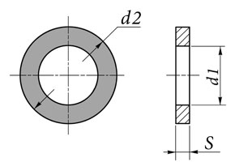

Шайбы плоские по ГОСТ 11371
Краткое описание товара
Подкладывают под головки болтов, винтов и под гайки для увеличения площади соприкосновения крепежа и опорной поверхности, снижения давления на прикрепляемый элемент конструкции и предотвращения его деформации в посадочных местах.
Краткие характеристики
- Класс точности: A, С
- Твердость стальных шайб не менее:140HV (класс точности A), 100HV (класс точности C).
Технические характеристики
| Параметры | Приложение №2 | ||||
| Номинальный диаметр d | 10 | 12 | 14 | 22 | |
| Диаметр описанной окружности e не менее | 25 | 30 | 35 | 40 | |
| Толщина S менее | 1,5 | 1,7 | 2 | 2,5 | |
| Теоретическая масса 1000 шт. шайб кг | 2.06 | 8.4 | 12.91 | 18.67 | |
Полное описание товара
Шайба ГОСТ 11378 – это крепёжная деталь, выполненная в виде плоского кольца с отверстием. Главная цель её применения – распределение нагрузки по всей площади конструкции. При этом самостоятельно это изделие не применяется, только в комплекте с гайкой, болтами, шпильками. В соответствии с ГОСТ 11378 крепёжная деталь может производиться в двух вариантах исполнения: с фаской или без неё. В первом случае она должна соответствовать классам точности А и В, во втором – А. Производители предлагают отличный выбор подобных изделий, различающихся такими параметрами, как диаметр под резьбу и диаметр самой шайбы, толщина детали, угол фаски (для первого варианта крепёжных деталей).Этот крепежный элемент востребован практически везде. Необходимы такие изделия во всех сферах промышленности. Используют шайбы также в строительстве, сборке мебели, для бытовых целей и пр. Выбирая крепёж этого типа, необходимо учитывать направления его использования и технические характеристики шайб ГОСТ 11378. Они должны полностью соответствовать предполагаемым условиям применения. Только в этом случае удастся обеспечить надёжную и долговечную фиксацию.Производители используют для изготовления этих изделий разные виды стали, сплавы цветных металлов.
ГОСТ 117371-73